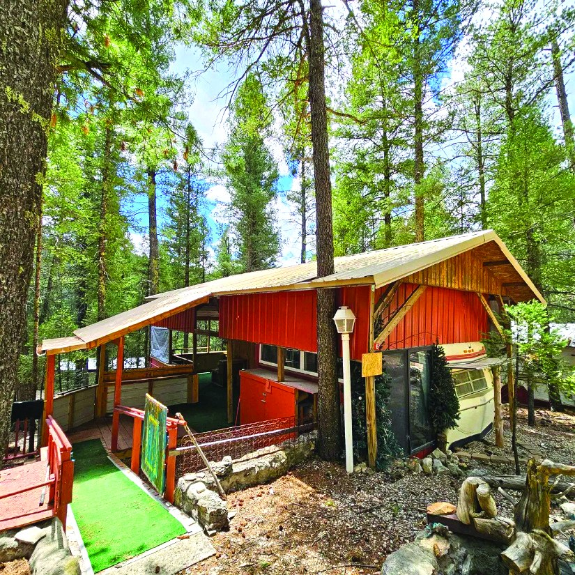
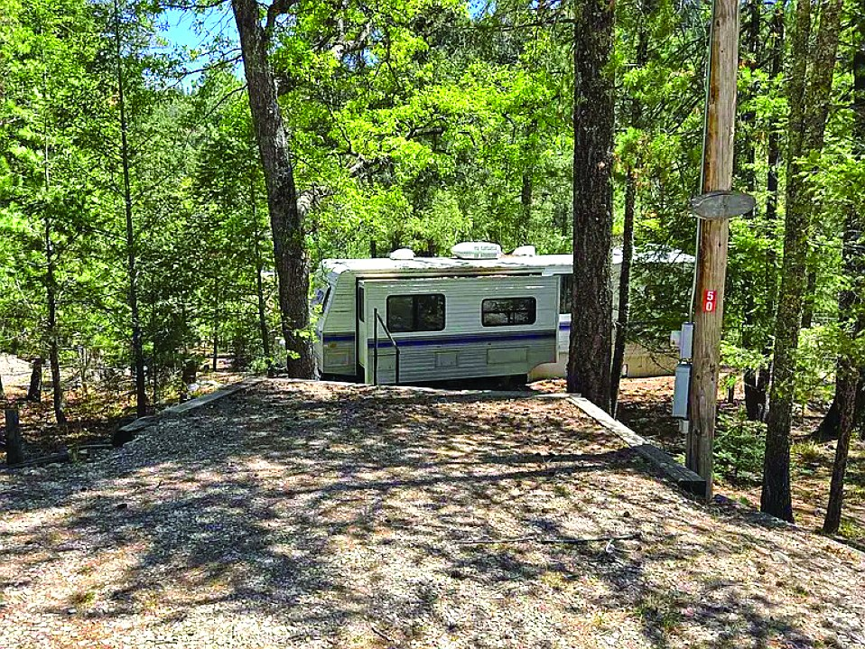
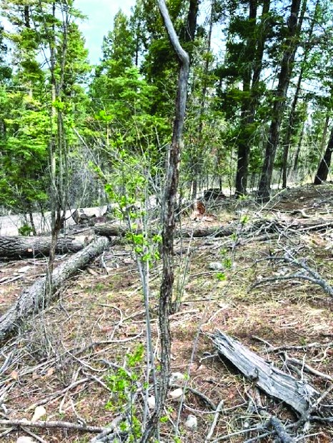
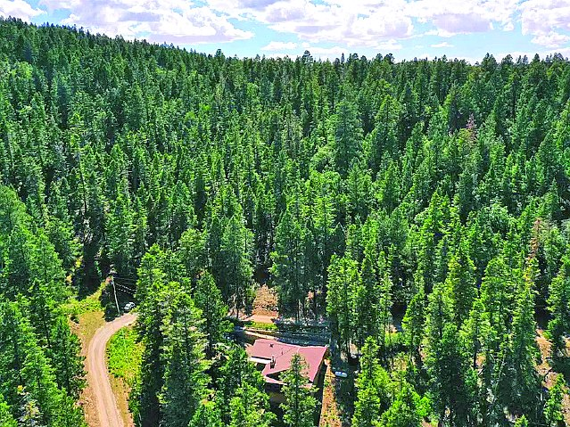
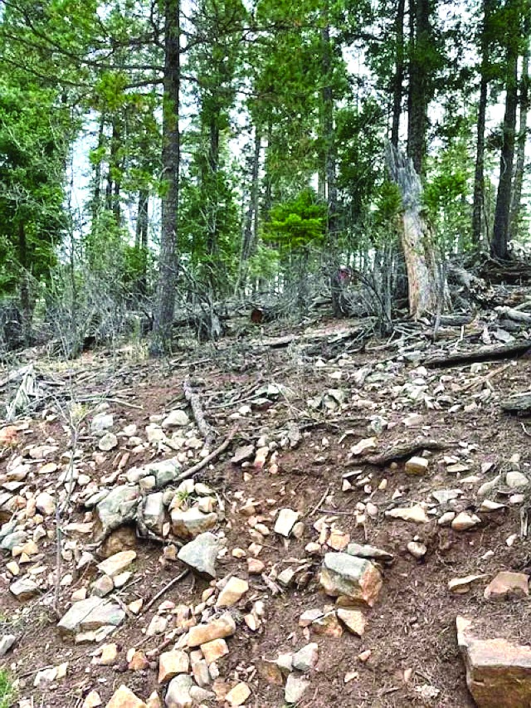
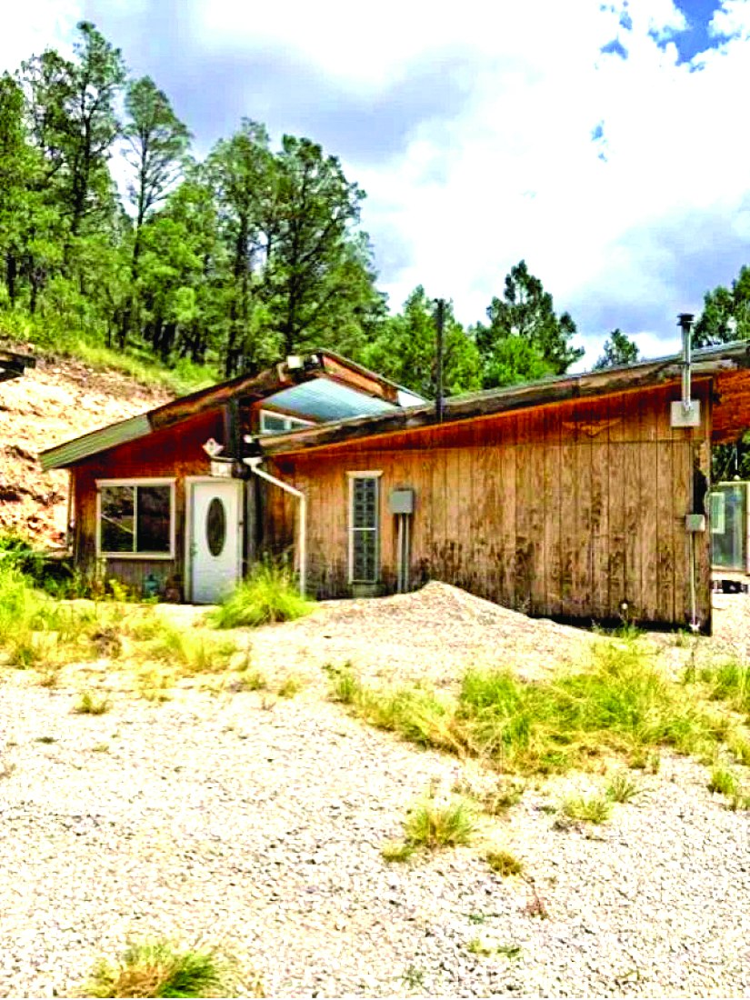
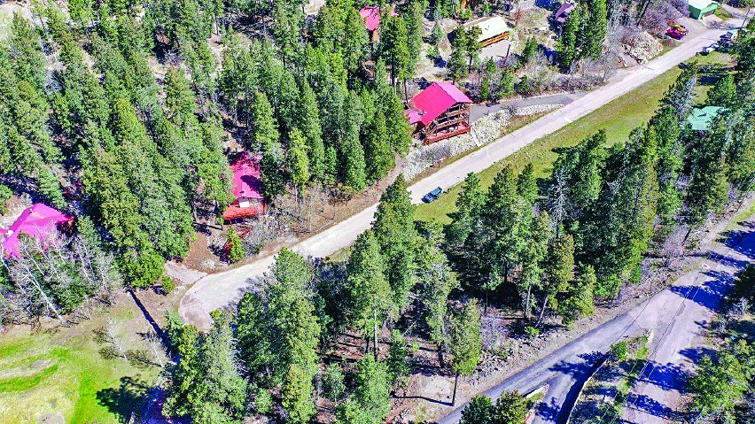

$69,000 Property MLS #171505
Property
$65,000
| Price | $65,000 |
|---|---|
| MLS # | 172952 |
| Listed by | Real Estate |
| Print edition | October 2026 Otero County Edition, page 19 |
About this property
Cloud Country West RV Subdivision Well maintained travel trailer located in a secluded area
Interested in this property?
Jim Carlton
Phone: 505-977-8763
Real Estate
Please contact the listing agent or company directly. The Real Estate Roundup is a publisher and does not show or sell properties.
Listing details and photo reproduced from the October 2026 print edition of The Real Estate Roundup (page 19), as printed. Prices and availability can change after publication — confirm with the listing agent.
More Homes

$60,000 Property MLS #172370
$60,000 2.5 Acre Property 2.5 acres MLS #172913
$55,000 Property MLS #172369
$75,000 1 Bedroom 1.0 Acre Property 1 bd · 1 ba · 1.0 acres MLS #173236
$54,000 0000 Chautauqua Canyon Blvd Cloudcroft, New Mexico MLS #172498